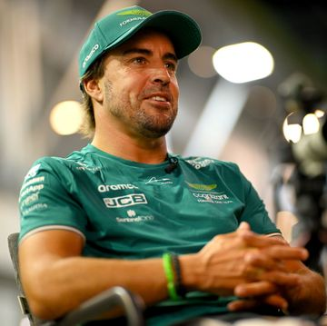

Fernando Alonso habla sobre la victoria en Singapur: "Necesitamos la confianza de Mónaco"

Fernando Alonso habla sobre la victoria en Singapur: "Necesitamos la confianza de Mónaco"
Cuando dio comienzo la temporada 2023 de Fórmula 1, en Aston Martin se fijaron en tres carreras donde
sabían que podrían ser más competitivos: Mónaco, Hungría y Singapur. Ciertamente Mónaco lo fue,
aunque el ritmo en Hungría dejó mucho que desear, y ahora se encuentran ante el último de los tres
circuitos.
¿Puede Fernando Alonso competir contra Red Bull en Singapur?
Estos tres circuitos fueron donde Aston Martin sabía que rendirían mejor debido a sus
características, las cuales se basan en circuitos de alta carga aerodinámica donde la velocidad
punta no sería el aspecto más importante.
En Mónaco, Fernando Alonso fue capaz de quedarse a poco más de 80 milésimas de Max Verstappen para
arrebatarle la pole y tuvo en sus manos la victoria si hubiesen puesto el neumático intermedio
cuando empezó a llover. Aún así, fue el primer segundo puesto de la temporada.p>
Por otro lado, en Hungría no fue el rendimiento esperado, ya que se encontraban en un momento de
caída al haberse equivocado con las mejoras de Canadá y que sus rivales hubieran dado pasos de
gigante en ese último mes.
Sin embargo, con los cambios introducidos en Zandvoort, más otros que se esperan este fin de semana,
las expectativas de los de Silverstone son altísimas, sabiendo que es, de los circuitos que quedan
de la temporada, donde cuentan con más posibilidades de hacerse con el primer puesto.
Por ese motivo, en el día de las ruedas de prensa fue tema general hablar de Fernando Alonso y la
posible victoria frente a Max Verstappen este fin de semana, a lo cual él ha respondido siendo cauto
y diciendo que, primero, tienen que acabar la carrera, además de necesitar la confianza que lograron
en Mónaco.
"¿Qué necesito para ganar aquí? Muchas cosas. Lo primero es ver la bandera a
cuadros. Entonces, veamos si podemos construir la confianza como lo hicimos en Mónaco”, declaró
Alonso al ser preguntado en las declaraciones previas al Gran Premio de Singapur de la FIA.
"En Monza no fuimos competitivos, pero aquí debería ser mejor. En algunas carreras
somos los segundos más rápidos y en otras sentimos que somos quintos o sextos, así que ya veremos.
Es un privilegio pelear con los mejores equipos, pero vamos carrera a carrera”, continuó Fernando
para acabar de responder.